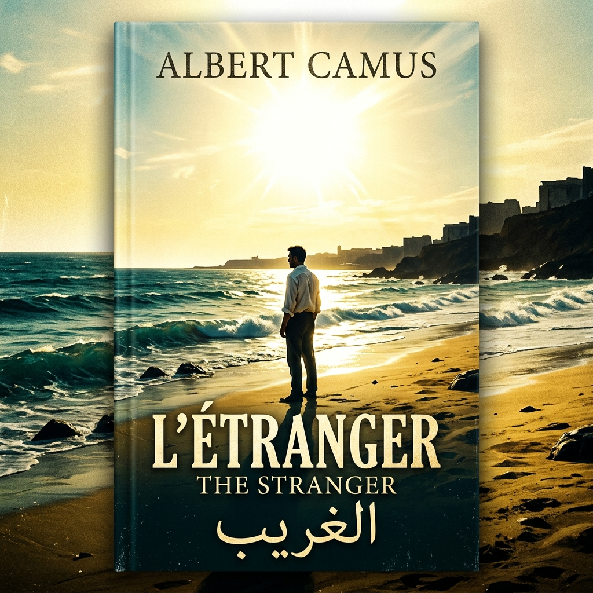
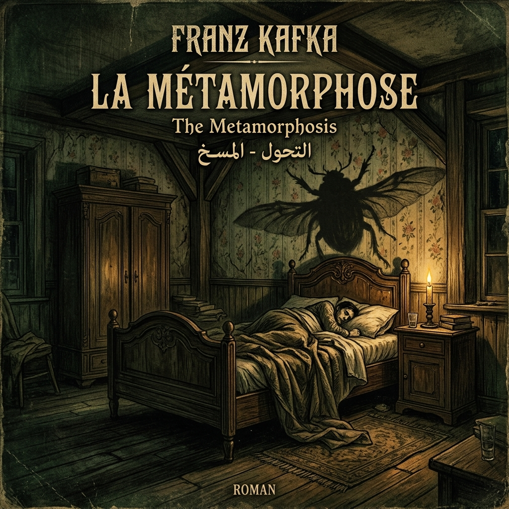
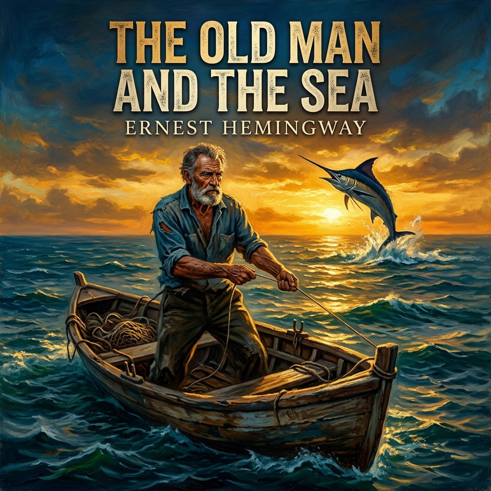

📚 المكتبة الصوتية
7 كتب صوتية (الروايات الصوتية الرئيسية)

13m 09s
الخيميائي

4h 15m
الجريمة والعقاب

16m 05s
الغريب

12m 27s
الأمير الصغير

12m 05s
التحول (المسخ)

12m 56s
الشيخ والبحر

09m 45s
رسائل إلى ميلينا
💬 شاركنا رأيك وتعليقك حول المكتبة الصوتية
★★★★★ 4.9/5 (1,420 تقييم)
قائمة الفصول
الخيميائي
الفصل الأول — الحلم الذي بدأ كل شيء

الجريمة والعقاب
فيودور دوستويفسكي
رسائل إلى ميلينا
فرانز كافكا